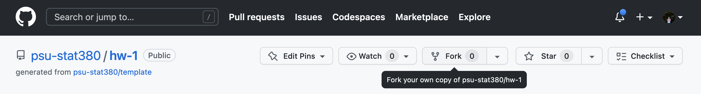

my_vec <- c(
"+0.07",
"-0.07",
"+0.25",
"-0.84",
"+0.32",
"-0.24",
"-0.97",
"-0.36",
"+1.76",
"-0.36"
)
Due: Fri, Jan 26, 2024 @ 11:59pm
Please read the instructions carefully before submitting your assignment.
This assignment requires you to:
- Upload your Quarto markdown files to a
gitrepository - Upload a
PDFfile on Canvas
- Upload your Quarto markdown files to a
Don’t collapse any code cells before submitting.
Remember to make sure all your code output is rendered properly before uploading your submission.
⚠️ Please add your name to the the author information in the frontmatter before submitting your assignment.
Question 1
20 points
In this question, we will walk through the process of forking a git repository and submitting a pull request.
- Navigate to the Github repository here and fork it by clicking on the icon in the top right

Provide a sensible name for your forked repository when prompted.
Clone your Github repository on your local machine
$ git clone <<insert your repository url here>> $ cd hw-1Alternatively, you can use Github codespaces to get started from your repository directly.
In order to activate the
Renvironment for the homework, make sure you haverenvinstalled beforehand. To activate therenvenvironment for this assignment, open an instance of theRconsole from within the directory and typerenv::activate()Follow the instrutions in order to make sure that
renvis configured correctly.Work on the reminaing part of this assignment as a
.qmdfile.- Create a
PDFandHTMLfile for your output by modifying the YAML frontmatter for the Quarto.qmddocument
- Create a
When you’re done working on your assignment, push the changes to your github repository.
Navigate to the original Github repository here and submit a pull request linking to your repository.
Remember to include your name in the pull request information!
If you’re stuck at any step along the way, you can refer to the official Github docs here
Question 2
30 points
Consider the following vector
For the following questions, provide your answers in a code cell.
What data type does the vector contain?
Create two new vectors called
my_vec_doubleandmy_vec_intwhich convertsmy_vecto Double & Integer types, respectively,Create a new vector
my_vec_boolwhich comprises of:TRUEif an element inmy_vec_doubleis \(\le 0\)FALSEif an element inmy_vec_doubleis \(\ge 0\)
How many elements of
my_vec_doubleare greater than zero?Sort the values of
my_vec_doublein ascending order.
Question 3
50 points
In this question we will get a better understanding of how R handles large data structures in memory.
- Provide
Rcode to construct the following matrices: \[ \begin{bmatrix} 1 & 2 & 3\\ 4 & 5 & 6\\ 7 & 8 & 9\\ \end{bmatrix} \quad \text{ and } \quad \begin{bmatrix} 1 & 2 & 3 & 4 & 5 & \dots & 100\\ 1 & 4 & 9 & 16 & 25 & \dots & 10000\\ \end{bmatrix} \]
Tip
Recall the discussion in class on how R fills in matrices
In the next part, we will discover how knowledge of the way in which a matrix is stored in memory can inform better code choices. To this end, the following function takes an input \(n\) and creates an \(n \times n\) matrix with random entries.
generate_matrix <- function(n){
return(
matrix(
rnorm(n^2),
nrow=n
)
)
}For example:
generate_matrix(4) [,1] [,2] [,3] [,4]
[1,] 0.22421039 -0.4915495 -0.6518972 -1.0369147
[2,] 0.62042747 -0.6143578 0.1769231 -1.7693751
[3,] 0.15194707 -0.6924603 1.0774410 -0.2774063
[4,] 0.01948096 0.5000232 1.4582802 -0.8350482Let M be a fixed \(50 \times 50\) matrix
M <- generate_matrix(50)
mean(M)[1] -0.005803896- Write a function
row_wise_scanwhich scans the entries ofMone row after another and outputs the number of elements whose value is \(\ge 0\). You can use the following starter code
row_wise_scan <- function(x){
n <- nrow(x)
m <- ncol(x)
# Insert your code here
count <- 0
for(...){
for(...){
if(...){
count <- count + 1
}
}
}
return(count)
}- Similarly, write a function
col_wise_scanwhich does exactly the same thing but scans the entries ofMone column after another
col_wise_scan <- function(x){
count <- 0
... # Insert your code here
return(count)
}You can check if your code is doing what it’s supposed to using the function here1
Between
col_wise_scanandrow_wise_scan, which function do you expect to take shorter to run? Why?Write a function
time_scanwhich takes in a methodfand a matrixMand outputs the amount of time taken to runf(M)
time_scan <- function(f, M){
initial_time <- ... # Write your code here
f(M)
final_time <- ... # Write your code here
total_time_taken <- final_time - initial_time
return(total_time_taken)
}Provide your output to
list(
row_wise_time = time_scan(row_wise_scan, M),
col_wise_time = time_scan(row_wise_scan, M)
)Which took longer to run?
- Repeat this experiment now when:
Mis a \(100 \times 100\) matrixMis a \(1000 \times 1000\) matrixMis a \(5000 \times 5000\) matrix
What can you conclude?
Appendix
Print your R session information using the following command
sessionInfo()R version 4.2.2 (2022-10-31)
Platform: aarch64-apple-darwin20 (64-bit)
Running under: macOS Ventura 13.0
Matrix products: default
BLAS: /Library/Frameworks/R.framework/Versions/4.2-arm64/Resources/lib/libRblas.0.dylib
LAPACK: /Library/Frameworks/R.framework/Versions/4.2-arm64/Resources/lib/libRlapack.dylib
locale:
[1] en_US.UTF-8/en_US.UTF-8/en_US.UTF-8/C/en_US.UTF-8/en_US.UTF-8
attached base packages:
[1] stats graphics grDevices datasets utils methods base
loaded via a namespace (and not attached):
[1] compiler_4.2.2 fastmap_1.1.1 cli_3.6.2 htmltools_0.5.7
[5] tools_4.2.2 yaml_2.3.8 rmarkdown_2.25 knitr_1.45
[9] xfun_0.41 digest_0.6.34 jsonlite_1.8.8 rlang_1.1.3
[13] renv_1.0.3 evaluate_0.23 Footnotes
If your code is right, the following code should evaluate to be
TRUE↩︎sapply(1:100, function(i) { x <- generate_matrix(100) row_wise_scan(x) == col_wise_scan(x) }) %>% sum == 100